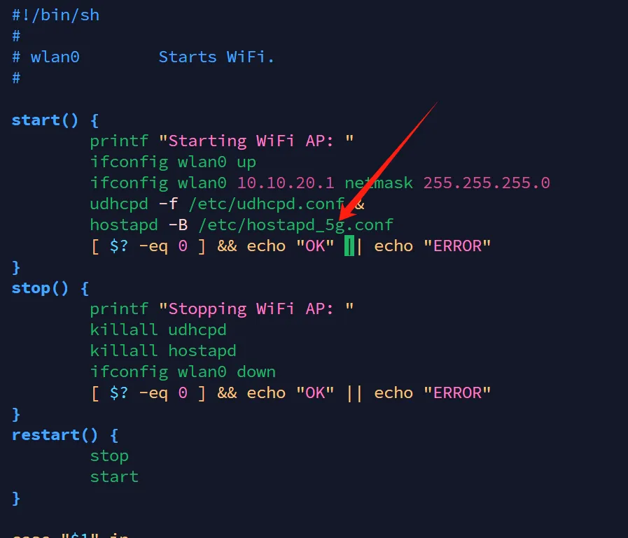
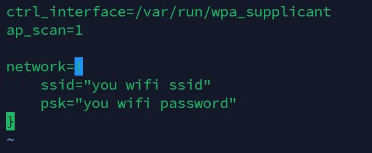
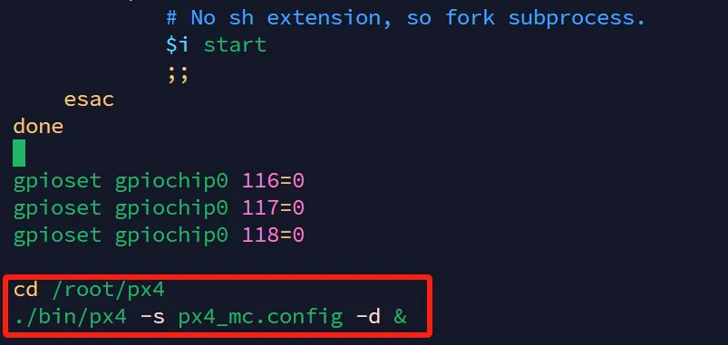
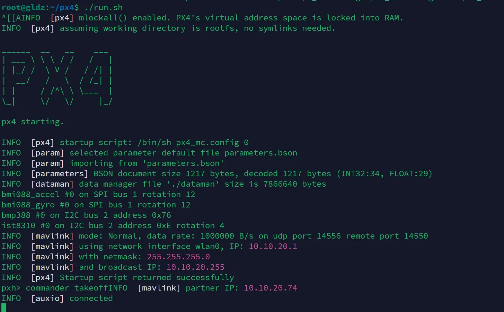

GLDRONE-T113
Warning
本飞控是实验性质飞控，非传统基于STM32的PX4飞控，在使用过程中可能会发生任何不可预料问题，请谨慎操作！敏感操作一定要拆桨操作！
请不要装到大轴距四轴进行测试，请装在150mm左右轴距机架室内飞行使用！大轴距四轴出意外伤害太大，请牢记本飞控仅为实验性质飞控！
非PX4老手不建议使用，为了您的安全！
简介
Linux飞控我已经做了好几年，之前做过一款R329的Linux飞控本打算量产，却因为飞行效果不甚理想就搁置了。现在使用全志T113-S3的这款飞控经历了许久的研发测试最终效果还算不错，批量出来提供给PX4爱好者研究使用，希望大家玩的愉快（使用一定要注意安全！）
Warning
8Pin接口与电调板对接时务必确认接线没有接反！接反的话会直接烧毁飞控！
方案说明
| 类别 | 方案 | 说明 |
|---|---|---|
| 主控芯片 | 全志T113-S3 | 双核A7 内置128MB DDR3 在Linux中运行PX4程序 |
| 辅助芯片 | STM32G031 | 辅助输出dshot300，ADC读取电池电压电流，串口连接T113 |
| IMU | BMI088 | 使用SPI连接T113 |
| 磁罗盘 | IST8310 | 使用I2C连接T113 |
| 气压计 | BMP388 | 使用I2C连接T113 |
| WIFI模块 | AIC8800-D4模块 | 2.4G 5G双频WIFI（硬件支持蓝牙功能，当前软件未调试完善） |
| USB | 1*OTG 1*HOST | USB2.0 480MHz |
| 串口 | 5个串口 | T113引出4个串口（SBUS需要占用一个）G0引出一个串口 |
| I2C | 2*I2C | T113引出两个I2C |
| SWD | 1*SWD | AUX G0引出SWD接口 |
| 电调接口 | 电调接口 | 8Pin sh-1.0 |
- 4Pin接口都使用SH1.0
- 板子孔距30.5*30.5
软件说明
| 类别 | 方案 | 说明 |
|---|---|---|
| Linux系统版本 | v6.8 | 主线内核，未加RT补丁 |
| PX4版本 | v1.14.2 | 基于该版本添加Linux飞控支持 |
- Linux用户名：root 密码：root
- 串口4为Linux调试串口，波特率115200
开源地址
| 类别 | 地址 | 分支 | 说明 |
|---|---|---|---|
| buildroot | https://github.com/guanglun/buildroot-t113 | gldrone_t113 | 编译文件系统和Linux内核 |
| awboot | https://github.com/guanglun/awboot | gldrone_t113 | 负责内核启动 |
| PX4 | https://github.com/guanglun/PX4-Autopilot | GLPX4_T113_V1.14.2 | PX4程序 |
| AUX G0 | https://github.com/guanglun/stm32g0_dshot | px4 | AUX G0 程序 |
到手使用
- 板子到手后请插入typec线缆上电，等待片刻后使用电脑连接WIFI：DRONE5G(使用5G频段是为了避免2.4G遥控器干扰，可以手动进入系统切换2.4G)
- 连接上飞控的热点后打开QGC地面站（最新版即可），工作正常的话会发现地面站已经和飞控连接
- 将飞行器拆桨，装上飞控。配置遥控器的话可以使用typec供电，检查电机方向和顺序的话需要连接3s电池（目前仅测试可3s，4s应该也是支持的）
- 连接上接收机，在遥控器配置界面校准遥控器并设置飞行模式
- 检查电机顺序和方向，当前仅支持PX4的X机架，其他没测试。电调请使用支持dshot300的电调，电机方向反向的话请交换线序，软件不支持反向电机
- 可以校准一下陀螺仪和水平
- 在未装桨情况下解锁测试功能是否正常
- 装桨小心测试飞行
配置说明
使用热点
进入终端配置脚本
rm /etc/init.d/S45*
cp /etc/S45wifi_ap /etc/init.d/
热点2.4G/5G切换
进入终端修改脚本vim /etc/init.d/S45wifi_ap

"hostapd"后面添加"_5g"为使用5G热点，不添加为使用2.4G热点
WIFI连接路由器使用
进入终端配置脚本
rm /etc/init.d/S45*
cp /etc/S45wifi_client /etc/init.d/

将ssid和psk后引号内修改成用户路由器热点信息
修改完成后reboot重启即可。IP可以通过串口或者路由器查看
打开/关闭PX4程序开机运行
进入终端修改脚本vim /etc/init.d/rcS

将文件末尾两行打开/关闭注释，然后重启即可
px4的可执行文件和配置文件都在/root/px4目录下，可手动使用run.sh脚本启动程序
